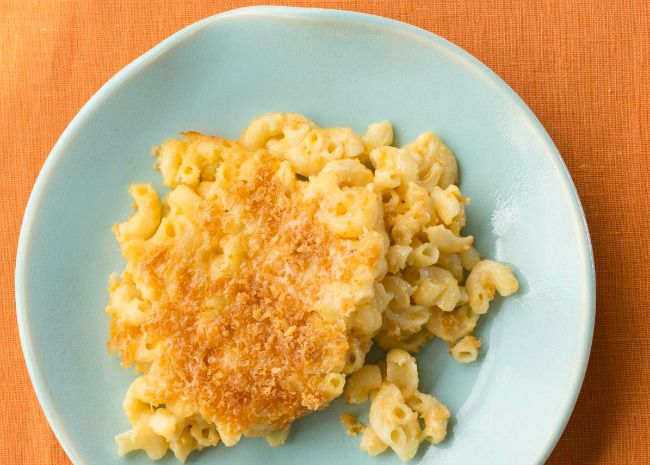

Mac and Cheese

Description
Skip the boxed stuff and make homemade mac and cheese tonight. This from-scratch macaroni and cheese recipe will become a staple in your dinner rotation.
Ingredients
- Macaroni: This homemade mac and cheese starts with a box of uncooked macaroni noodles.
- Butter and flour: You'll need butter and flour to make a roux for the cheese sauce. You'll also need two tablespoons of butter for the topping.
- Milk: Use whole milk for the richest flavor and texture.
- Cheese: This baked mac and cheese recipe calls for Cheddar and Parmesan cheeses.
- Seasonings: Salt and pepper goes into the sauce, while paprika is sprinkled over the topping.
- Bread crumbs: Use store-bought dried bread crumbs or make your own at home.
Cooking Steps
- Boil the noodles, drain, and transfer to a prepared baking dish.
- Make the cheese sauce, pour the sauce over the noodles, and stir.
- Make the topping, spread it over macaroni and cheese, and sprinkle with paprika.
- Bake the mac and cheese until the topping is golden brown.